Resonance
Another term introduced into chemistry by VB theory is resonance, the superposition of the wavefunctions representing different electron distributions in the same nuclear framework. To understand what this means, consider the VB description of a purely covalently bonded HCl molecule, which could be written as ψ = A(1)B(2) + A(2)B(1), with A now a H1s orbital and B a Cl2p orbital. However, there is something wrong with this description: it allows electron 1 to be on the H atom when electron 2 is on the Cl atom, and vice versa, but it does not allow for the possibility that both electrons are on the Cl atom (ψ = B(1)B(2), representing H+Cl−) or even on the H atom (ψ = A(1)A(2), representing the much less likely H−Cl+). A better description of the wavefunction for the molecule is as a superposition of the covalent and ionic descriptions, and we write (with a slightly simplified notation, and ignoring the less likely H−Cl+ possibility) ψHCl =ψH−Cl + λψHCl with λ (lambda) some numerical coefficient. In general, we write
ψ = ψcovalent + λψionic *
where ψcovalent is the wavefunction for the purely covalent form of the bond and ψionic is the wavefunction for the ionic form of the bond. The approach summarized by eqn * is an example of resonance. In this case, where one structure is pure covalent and the other pure ionic, it is called ionic–covalent resonance. The interpretation of the wavefunction, which is called a resonance hybrid, is that if we were to inspect the molecule, then the probability that it would be found with an ionic structure is proportional to λ2. If λ2 is very small, the covalent description is dominant. If λ2 is very large, the ionic description is dominant. Resonance is not a flickering between the contributing states: it is a blending of their characteristics, much as a mule is a blend of a horse and a donkey. It is only a mathematical device for achieving a closer approximation to the true wavefunction of the molecule than that represented by any single contributing structure alone.
A systematic way of calculating the value of λ is provided by the variation principle which is proved in Topic 25:
The arbitrary wavefunction is called the trial wavefunction. The principle implies that, if we vary the parameter λ in the trial wavefunction until the lowest energy is achieved (by evaluating the expectation value of the hamiltonian for the wavefunction), then that value of λ will be the best and through λ2 represents the appropriate contribution of the ionic wavefunction to the resonance hybrid.
Resonance hybrids. Consider a bond described by eqn 22.3. We might find that the lowest energy is reached when λ = 0.1, so the best description of the bond in the molecule is a resonance structure described by the wavefunction ψ = ψ covalent + 0.1ψ ionic . This wavefunction implies that the probabilities of finding the molecule in its covalent and ionic forms are in the ratio 100:1 (because 0.12 = 0.01).
Example. If a normalized wavefunction has the form ψ = 0.889ψ covalent + 0.458ψ ionic, what is the percentage probability of finding both electrons of the bond on one atom? Answer: 21.0 per cent.
A single Lewis structure is often an inadequate description of the molecule: as an example, we consider ozone, O3, the shape of which is explained later. The Lewis structure
O=O−O
suggests incorrectly that one O−O bond is different from the other, whereas in fact they have identical lengths (128 pm) intermediate between those of typical single O−O and double O=O bonds (148 pm and 121 pm, respectively). This deficiency of the Lewis description is overcome by introducing the concept of resonance, in which the actual structure of the molecule is taken to be a superposition, or average, of all the feasible Lewis structures corresponding to a given atomic arrangement.
Resonance is indicated by a double-headed arrow, as in
Resonance should be pictured as a blending of structures, not a flickering alternation between them. It is important to realize that the individual resonance structures themselves do not exist in equilibrium. These resonance structures do not exist as discrete entities, but there is actually just one structure that is a hybrid of all of the individual resonance structures. In quantum mechanical terms, the electron distribution of each structure is represented by a wavefunction, and the actual wavefunction, ψ, of the molecule is the superposition of the individual wavefunctions for each contributing structure:
ψ = ψ(O−O=O) + ψ(O=O−O)
The overall wavefunctions is written as a superposition with equal contributions from both structures because the two structure have identical energies.
This wavefunction is not normalized. We shall often omit normalization constants from linear combinations in order to clarify their structure. The wavefunctions themselves are formulated in the valence bond theory, which is described later. The blended structure of two or more Lewis structures is called a resonance hybrid.
The ionic and biradical resonance structures indicated below both contribute significantly to the overall wave function as well.
Note that resonance occurs between structures that differ only in the allocation of electrons; resonance does not occur between structures in which the atoms themselves lie in different positions. For instance, there is no resonance between the structures SOO and OSO.
Resonance has two main effects:
Resonance averages hte bond characteristic over the molecule;
The energy of a resonance hybrid structure is lower than that of any single contributing structure.
The energy of the O3 resonance hybrid, for instance, is lower thatn that of either individual structure alone.
Let us apply the concepts of resonance to describe bonding in the carbonate ion.
Three equivalent structures can be drawn for this ion, differing only in the location of the C=O double bond, but no single structure correctly describes this ion. Instead, the actual structure is a composite of the three structures, in good agreement with experimental results. In the CO32− ion, all three carbon–oxygen bond distances are 129 pm, intermediate between COO single bond (143 pm) and C=O double bond (122 pm) distances.
All the limiting structures do not contribute equally to the real molecule but each structure contributes in proportion to its stability. Equivalent limiting structures contribute equally. Usually all the atoms taking part in the resonance lie in a plane and the stability of a structure depends on following factors:
Structures with more covalent bonds are more stable than those with lesser covalent bonds. Limiting structures having same number of sigma and pi bonds are known as isovalent structures. If the number is different then the structures are called heterovalent.
Stability decreases if there are isolated charges or there is increase in charge separation. Structures with similar charges on adjacent atoms are not significant.
Structures with a negative charge on more electronegative atom are more stable than those in which the negative charge is on less electronegative atom. Amongst heterovalent structures those having negative charge on more electronegative atom (like oxygen or chlorine) are important contributing structures.
Structures with strained bond angles or bond lengths are less stable.
For writing resonance contributing structures only electrons may be shifted from one place to another within the molecule but not the atoms. Resonance Energy. The extra stabilization of a molecule because of resonance or delocalization is expressed in terms of resonance or delocalization energy. The magnitude of resonance energy is large when
Limiting structures are identical, e.g., in carboxylate anion.
Number of limiting structures of comparable energy is large.
Cyclopentadieny] anion (All limiting structures are of identical energy)